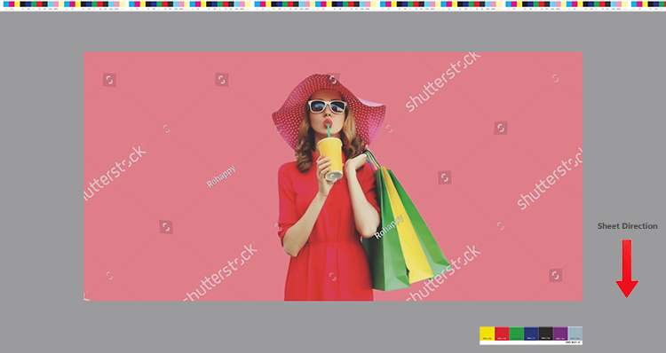
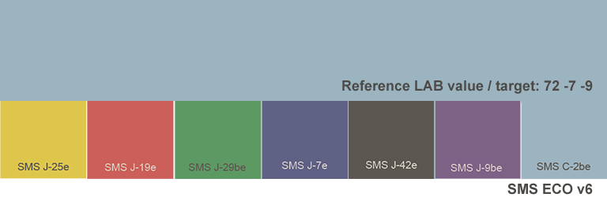
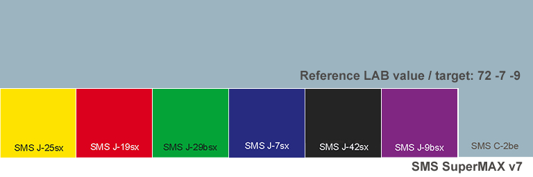

Shop SMS SMS Technical SMS products & services SMS in articles and webinars Testimonies
SMS and the environment SMS news Interesting links SMS: How, why and when SMS Q&A
SMS for design and
advertising Getting started with SMS colours SMS BLOCKS |
SMS for print Printers (in all categories) SMS READY - or not? |

SMS READY control strips to test accuracy in printing, painting or dying
Print shops:
In July of 2024 we simplified and streamlined the process for print shops, paint manufacturers/paint shops and textile manufacturers etc. to become SMS READY.
Instead of a large testform, that we used before, we have reduced the test down to a few SMS colour patches that printers can insert into any job - or all jobs if they like, to see where they stand alongside or right above or below the standard colourbar.
These SMS colour patches can also be used as a control strip to do a quick visual quality test to track colour consistency between forms in print production - even between papertypes, since the light bluegray colour should remain exactly the same, whether you are printing Standard, ECO or MAX colours or no SMS colours at all.
This is for CMYK printing in any category of printing.
Brand owners, designers, photographers
Equally, if a customer of a print shop (for instance a brand owner concerned about his brand colours, a photographer concerned about his or her pictures or a designer, concerned about everything) would like to match all the 7 patches for a quick visual and instrumental check across papertypes, simply use the ECO patches for this purpose. Simply drop the appropriate SMS Control Strip anywhere within your layout and then measure it when you get the job delivered to check the colour accuracy, - whether you are using SMS colours within the layout or not.
For proper post print quality control of a printed job, we recommend that the MAX v6 control strip be used for printing on white, coated paper, the Standard v6 for printing on white, uncoated paper and the ECO v6 control strip for newspaper printing.
We have now added a special version that we call SMS SuperMAX. This version is suited for printing according to FOGRA59 (eciRGBv2), CRPC7 or XCMYK specifications.
Narrator Mr. Ingi Karlsson. A video by Spot-Nordic. December 8th 2025
For offset printing, make sure that the direction of the control strip is the same as the colorbar.

The measureable part of each patch is approx. 2.5 x 3.5 cm, which is well suited for general printing on paper.
It is ok to scale the control strip down, just as long as the measureable area of each part is large enough to measure with your spectral instrument.
Additionally we offer the so-called mini version, where the large gray area has been removed - see image here above, if there is limited space available.
For digital printing on textile, we have created an enlarged version of the patches, where each patch is in excess of 5 x 7 cm, which is useful, especially for uneven surfaces or for instruments that have larger apertures. The patches may be reduced as needed by each user.
These large patches are also useful for ink manufacturers, paint manufacturers, dye manufacturers and plastic manufacturers that wish to match and offer SMS colours to their customers.
The new SMS patches look like this and are delivered in sRGB format and thus have to be converted to the destination CMYK specification.

Download SMS READY
control strip
Download Mini
version
Download
patches for textile

Download SMS
READY control strip
Download
Mini version
Download
patches for textile

Download SMS READY control strip Download Mini version Download patches for textile

Download SMS READY control strip Download Mini version
An SMS READY Expert can convert the file to any CMYK format (contact support@spotmatchingsystem.com if you need assistance).
If there is no SMS READY Expert working for the Print shop, the first step will be to order training for a key member of the staff, who will be responsible for correct reproduction of SMS colours on behalf of the print shop and will report and coordinate with Spot-Nordic to ensure that printing of SMS colours goes smoothly.
Once an SMS READY Expert has graduated and been appointed, he or she will convert the sRGB colour patches to the print conditions of the print shop. Spot-Nordic will check all files before test printing starts.
Information about our SMS READY Expert certification is available here.
In the case of offset printing, each printing press that prints SMS colours should preferably have a minimum of an open loop spectral colourbar reader and software to ensure quick measurement and instant correction of colours that trend out of density during production.
For best results we recommend a closed loop or inline system for automated correction of ink adjustment in all ink zones, - such as the Rutherford or InkZone systems, which both are available from Spot-Nordic for offset printing for most offset press types, newer and older.
If you wish to offer printing of Standard and ECO colours, it is sufficient to print the Standard patches.
If you wish to offer printing of the SMS MAX colours, you will need to print the MAX colour patches.
When applying for your SMS READY certification, please include the international CMYK specifications your customers can safely use, when preparing CMYK jobs for printing as well as any other standards you offer to your customers (custom CMYK icc profiles).
Send a copy of all CMYK icc profiles that the intention is to use for printing of SMS colours at the print shop so we can check them against our own icc profiles.
Please write your LAB values with an accuracy of 0.01 if possible (Example L=25.38, A=44.26, B=78.56.
Scan the sheet and send the file to support@spotmatchingsystem.com.
If all CIELAB values of the SMS colours are within a dE00 of 3, you
are eligible for an SMS READY certification.
If they are below 2 and you believe you can maintain this accuracy
moving forward, you may apply for a Silver certificate and below 1 you
may apply for a Gold certificate.
We will take into account the actual white point of you paper.
Please apply for the badge (standard and tolerance) that safely applies
in your opinion:
Available badges are:
Gold: MAX dE2000 of 1 or less from target to print.
Silver: MAX dE2000 of 2 or less from target to print.
Bronze: MAX dE2000 of 3 or less from target to print.
SMS colours for your displays
Anyone that works professionally with SMS colours should only use a display/monitor, capable of displaying at least 100% of the sRGB colourspace.
Furthermore to ensure constantly correct colour, investing in a display/monitor calibrator is necessary.
Good display calibrators from Calibrite or Datacolor are available in the price range from 200-400 Euros.
Calibrite screen calibrators are available from Spot-Nordic - see here.
Printed SMS colours for inspiration for your customers
SMS READY Print shops, are allowed to print their own SMS colour guides for their promotion and gifts to their customers, as well as for inhouse work. A sample of each such item must be sent to Spot-Nordic for approval.
Please contact support@spotmatchingsystem.com if this is of interest and we will be happy to assist.
Shop SMS SMS Technical SMS products & services SMS in articles and webinars
SMS and the environment SMS news Interesting links SMS: How, why and when SMS Q&A
|
SMS for design and
advertising Getting started with SMS colours SMS BLOCKS |
SMS for print Printers (in all categories) SMS test forms |